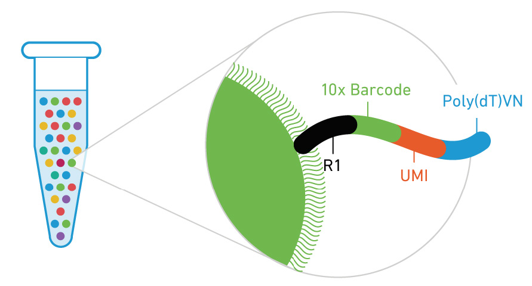
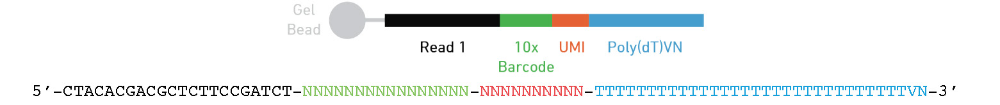
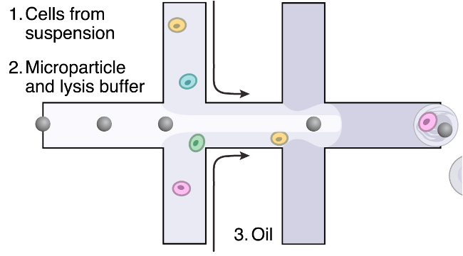
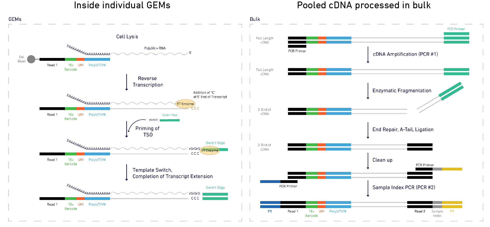
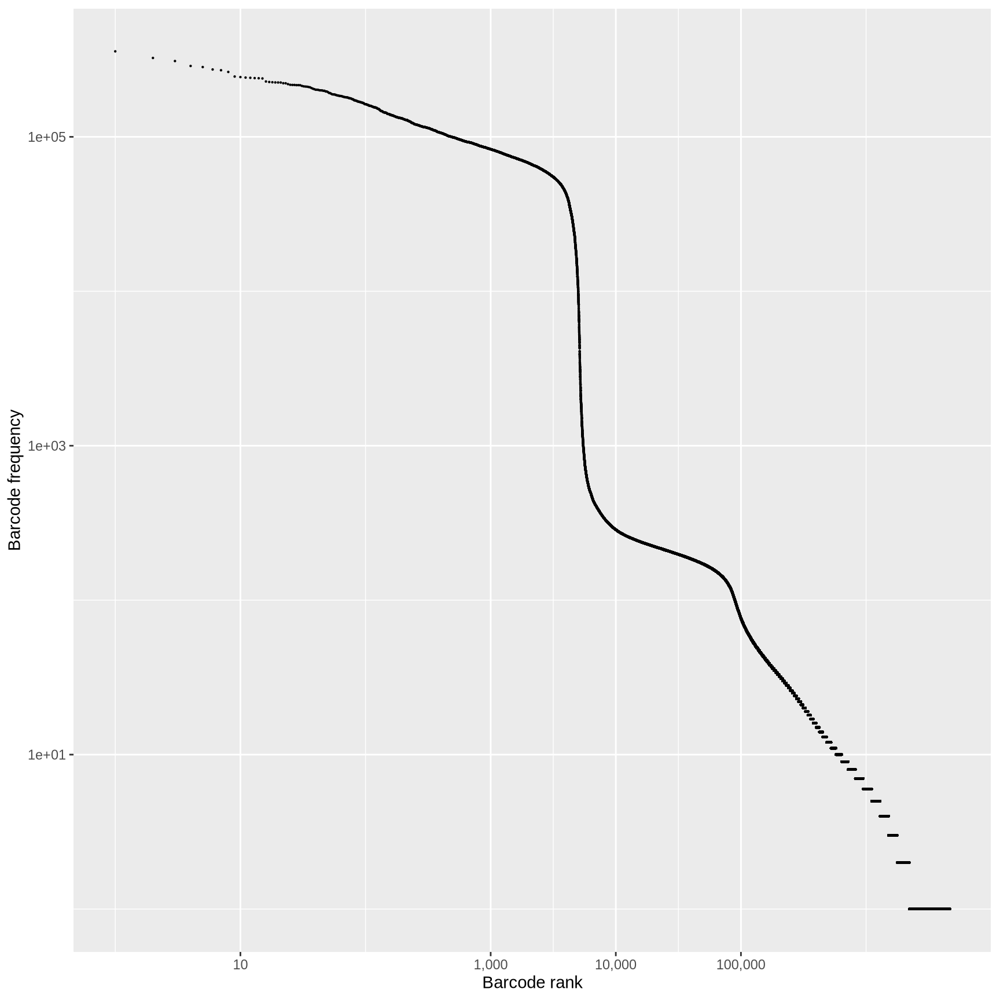
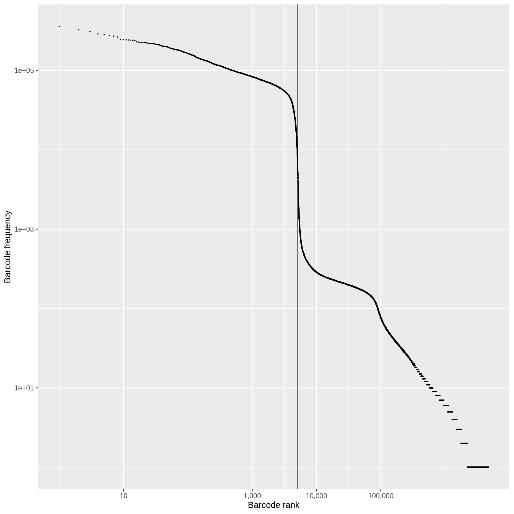
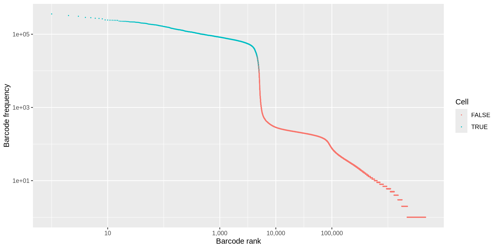
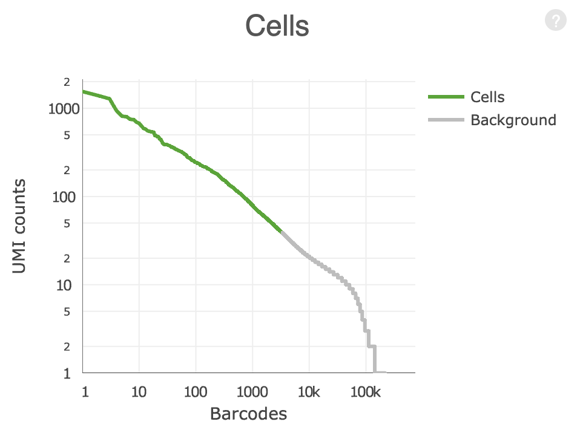
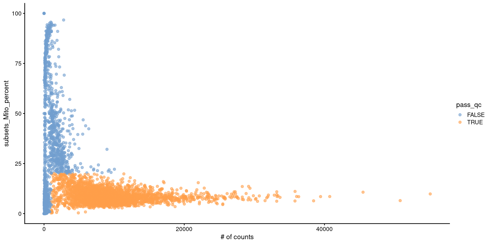

Single cell RNA-Seq
Introduction and Quality Control
Kristen Wells-Wrasman
RNA Bioscience Initiative | CU Anschutz
2024-09-24
Contact Info
Greetings experimentalist humans 👋
kristen.wells-wrasman@cuanschutz.edu
RBI Informatics Fellows Office hours
Learning key
- We will switch between lecture and your exercise
qmd. - To denote a slide that corresponds to your exercise, I will include ⌨️ in the slide title
Learning Objectives
Lecture 1
- Identify key quality control issues with single cell RNA-seq data and perform filtering to exclude poor quality cells
- Interact with single cell data using Bioconductor tools
Lecture 2
- Perform analysis to identify cell types in single cell data by using unsupervised clustering methods and comparing to public datasets
- Describe the importance and reasoning for conducting each step of the analysis
Single cell or bulk?
Single cell
- High level overview of general transcriptomic landscape of genes that are expressed highly at the single cell level
- Sequencing depth is low per cell so we only have confident detection of highly expressed genes
- Differential expression is less well developed to compare different conditions
- Most techniques only capture the 5’ or 3’ end
- Good for identifying subpopulation of cells that change between conditions
- Doesn’t require prior knowledge of surface proteins to sort out a population
- Doesn’t average across all cells in the experiment
Bulk
- Global overview of transcriptomic landscape of an entire sample using high to low expressed genes.
- Sequencing depth is much deeper so there is higher confidence to detect mid to low range expression
- Good for novel transcript identification and assessing how global transcriptome changes between conditions
- Captures full RNA molecule so can be used for RNA-splicing analysis
- Doesn’t work for subpopulation analysis
- All cells are averaged so determining what is happening to one cell type is challengin
- Are your results because of a transcriptomic change or a change in cell type frequencies?
Single cell sequencing



Where is the barcode and UMI?
Below is the design for the 3’ 10x genomics assay
Other assays may have different locations of there cell barcode and UMI.
These may also be different lengths.
Or even on read 2 (ex Parse bioscience).
Be sure to check what kit was used to prep your data and always perform sanity checks throughout the analysis!
Library prep
Other single cell methods
droplet-based scRNA-seq: e.g. 10x Genomics or Drop-Seq
Smart-seq based scRNA-seq: (bulk-RNA-seq on single cells in individual wells/tubes)
CITE-Seq: gene expression + cell surface protein abundance
VDJ-Seq: Gene expression + targeted sequencing of T-Cell and B-Cell receptors
Many others: ATAC, spatial transcriptomics, DNA sequencing, etc. (see Integrative Single cell analysis)
Overview of analysis steps
From raw reads to a UMI count matrix

cellrangerfrom 10x Genomics (STAR)alevin(Salmon)STAR-solo(From the STAR developers)
Alevin
$ salmon -h
salmon v1.3.0
Usage: salmon -h|--help or
salmon -v|--version or
salmon -c|--cite or
salmon [--no-version-check] <COMMAND> [-h | options]
Commands:
index : create a salmon index
quant : quantify a sample
alevin : single cell analysis # <------
swim : perform super-secret operation
quantmerge : merge multiple quantifications into a single file Alevin
Alevin output files
$ls alevin/
alevin.log # run info
featureDump.txt # info on each cell barcode
quants_mat.gz # binary file with UMI counts
quants_mat_cols.txt # genes in count matrix
quants_mat_rows.txt # cell barcodes in count matrix
quants_tier_mat.gz # info about mapping for each gene
whitelist.txt # valid barcodes discovered by alevinAlevinQC
Can generate interactive QC reports using alevinQC
QC: cell or empty droplet?
In a typical droplet scRNA-seq experiment 100k - 1M cell barcodes are detected, but only 1-10k cells are loaded
Most of these droplets are “empty” and contain very few reads.
What is the source of these reads in the “empty” droplets?
How do we determine if the data from a particular cell barcode is derived from a single cell?

QC: cell or empty droplet?

Fit a curve to the observed data and identify point where first derivative is minimized.
Any barcodes less than the “knee”, test sequences for off-by-one errors against the barcodes above the knee.
Take top half of cells above the knee and train a classifier using multiple criteria (% mapping, % mitochondrial and rRNA reads, duplicate rate, …)
Classify ambiguous cells in lower half into likely cells or not.
QC: Cell or empty droplet?
Good data

Bad data

Cell calling sanity check
- It’s always a good think to sanity check your data
- After calling cells, how can we perform a sanity check?
- I once reanalyzed data from a published paper and found that they had treated two separate sequencing runs as two separate captures. If this happens to you, what is a quick and easy way to make sure you treated your data correctly at the cell calling step?
Doublets and Multiplets

Doublets are not clearly identifiable using simple QC metrics, so cannot be reliably removed with filtering with # of UMIs or genes detected.
scran::doublet_cluster: Compare each cluster to an in silico mix of two other clusters. Get per cluster score of likelihood of being a doublet.scran::doublet_cell: Compare each cell to a mix of two other randomly selected cells. Get per cell score of likelihood of being a doublet.Doublets can also arise due to sample prep, e.g. incomplete generations of a single cell suspension. These doublets are difficult to exclude from the data
Turning to our exercise ⌨️
Before jumping into the analysis, let’s step back and start running through the exercise for today
Start by loading in the packages
Raw data: the UMI count matrix ⌨️
scRNA-seq libraries produce reads from 100,000 - 1,000,000 cell barcodes
A matrix of 20,000 genes x 1,000,000 barcodes is 20 billion values (!).
>95% are zeros due to empty droplets and the low efficiency of the library prep (< 10-20% of RNA captured).
Sparse matricies ⌨️
- Use the
asfunction to convert to a sparse matrix
3 x 5 sparse Matrix of class "dgCMatrix"
[1,] . . . . 1
[2,] . . . . .
[3,] . 2 . . 1- This only stores non-zero values
- Internally, values are stored as a row column value triplet
3 x 5 sparse Matrix of class "dgCMatrix", with 3 entries
i j x
1 3 2 2
2 1 5 1
3 3 5 1Sparse matricies ⌨️
- Functions at manipulate matricies (
rowMeans,colSums,apply,[) can be used on sparseMatricies as long as theMatrixpackage is loaded.
How can we extract the first 2 rows and first 3 columns of the sparse matrix sm that we generated above?
Sparse matricies ⌨️
- Functions at manipulate matricies (
rowMeans,colSums,apply,[) can be used on sparseMatricies as long as theMatrixpackage is loaded.
How can we extract the first 2 rows and first 3 columns of the sparse matrix sm that we generated above?
Sparse matricies ⌨️
How can we calculate the sum of the columns of sm?
Sparse matricies ⌨️
How can we calculate the sum of the columns of sm?
Base R subsetting ⌨️
- Basic R concepts for subsetting and referencing columns are important in single cell analysis
- Vectors can be subset by index (position), logical vector (
c(TRUE, FALSE)) or name (if vector is named)
[1] "a" "b" "c" "d" "e" "f" "g" "h" "i" "j" "k" "l" "m" "n" "o" "p" "q" "r" "s"
[20] "t" "u" "v" "w" "x" "y" "z"[1] "b" "d" "f"Base R subsetting ⌨️
[1] "a" "e" "i" "o" "u"Base R subsetting ⌨️
A Z
"a" "z" Base R subsetting ⌨️
- Matrices are 2 dimensional vectors and have similar subsetting rules except there are two dimensions, rows and columns.
matrix[rows_to_subset, columns_to_subset]
[,1] [,2] [,3] [,4]
[1,] 2 8 14 20
[2,] 4 10 16 22
[3,] 6 12 18 24Base R subsetting ⌨️
[,1] [,2]
[1,] 7 19
[2,] 8 20
[3,] 9 21
[4,] 10 22
[5,] 11 23
[6,] 12 24Base R subsetting ⌨️
[,1] [,2]
[1,] 7 19
[2,] 8 20
[3,] 9 21Base R subsetting ⌨️
[,1] [,2] [,3] [,4]
[1,] 4 10 16 22
[2,] 5 11 17 23
[3,] 6 12 18 24Base R subsetting ⌨️
[,1] [,2]
[1,] 1 7
[2,] 2 8
[3,] 3 9
[4,] 4 10
[5,] 5 11
[6,] 6 12Base R subsetting ⌨️
The base R data.frame and Bioconductor DataFrame can also be subset with the [ and we can reference individual vectors in a data.frame using $.
mpg cyl disp
Mazda RX4 21.0 6 160
Mazda RX4 Wag 21.0 6 160
Datsun 710 22.8 4 108Base R subsetting ⌨️
[1] 21.0 21.0 22.8 21.4 18.7 18.1 14.3 24.4 22.8 19.2 17.8 16.4 17.3 15.2 10.4
[16] 10.4 14.7 32.4 30.4 33.9 21.5 15.5 15.2 13.3 19.2 27.3 26.0 30.4 15.8 19.7
[31] 15.0 21.4Base R subsetting ⌨️
mpg cyl disp hp drat wt qsec vs am gear carb
Mazda RX4 21.0 6 160.0 110 3.90 2620 16.46 0 1 4 4
Mazda RX4 Wag 21.0 6 160.0 110 3.90 2875 17.02 0 1 4 4
Datsun 710 22.8 4 108.0 93 3.85 2320 18.61 1 1 4 1
Hornet 4 Drive 21.4 6 258.0 110 3.08 3215 19.44 1 0 3 1
Merc 240D 24.4 4 146.7 62 3.69 3190 20.00 1 0 4 2
Merc 230 22.8 4 140.8 95 3.92 3150 22.90 1 0 4 2
Fiat 128 32.4 4 78.7 66 4.08 2200 19.47 1 1 4 1
Honda Civic 30.4 4 75.7 52 4.93 1615 18.52 1 1 4 2
Toyota Corolla 33.9 4 71.1 65 4.22 1835 19.90 1 1 4 1
Toyota Corona 21.5 4 120.1 97 3.70 2465 20.01 1 0 3 1
Fiat X1-9 27.3 4 79.0 66 4.08 1935 18.90 1 1 4 1
Porsche 914-2 26.0 4 120.3 91 4.43 2140 16.70 0 1 5 2
Lotus Europa 30.4 4 95.1 113 3.77 1513 16.90 1 1 5 2
Volvo 142E 21.4 4 121.0 109 4.11 2780 18.60 1 1 4 2
new_column_name
Mazda RX4 Hello!
Mazda RX4 Wag Hello!
Datsun 710 Hello!
Hornet 4 Drive Hello!
Merc 240D Hello!
Merc 230 Hello!
Fiat 128 Hello!
Honda Civic Hello!
Toyota Corolla Hello!
Toyota Corona Hello!
Fiat X1-9 Hello!
Porsche 914-2 Hello!
Lotus Europa Hello!
Volvo 142E Hello!Read in Alevin output with tximport
- Now that we know how to work with a sparse matrix, let’s read in our data
tximporthas methods for importing the binary data from alevin- We need to supply a path to the
quants_mat.gzfile. - If you want to load multiple samples use iteration approaches (e.g.
lapply,purrr::map, aforloop). - Also note that the
edspackage was installed which greatly speeds up the loading of the matrix.
We will load in data from a 10x Genomics scRNA-seq library generated from human periperhal blood mononuclear cells (PMBCS).
Read in Alevin output with tximport ⌨️
[1] "abundance" "counts" "countsFromAbundance"tx is a list with 3 elements, abundance, counts, and countsFromAbundance. Let’s look at the counts element
Read in Alevin output with tximport ⌨️
6 x 3 sparse Matrix of class "dgCMatrix"
GCTGCAGTCCGATCTC ACTATGGAGGTCCCTG ATTTCTGTCTCTATGT
ENSG00000243485 . . .
ENSG00000284332 . . .
ENSG00000237613 . . .
ENSG00000268020 . . .
ENSG00000290826 . . .
ENSG00000240361 . . .Here you can see that tx$counts is a sparse matrix that is genes (rows) by cells (columns).
How many barcodes are in tx$counts? How many genes?
Read in Alevin output with tximport ⌨️
What fraction of the matrix is non-zero? We can use the nnzerofunction from the Matrix package check
Read in Alevin output with tximport ⌨️
Single cell analysis packages
Key resource for single cell analysis in Bioconductor: Orchestrating Single Cell Analysis
SingleCellExperiment is the core datastructure for storing single cell data.
scran provides algorithms for low-level processing of single cell data.
scater provides plotting, data transformation, and quality control functionality
SingleCellExperiment

Create a SingleCellExperiment object ⌨️
A SingleCellExperiment object can be created from our sparse matrix using the SingleCellExperiment() function.
class: SingleCellExperiment
dim: 62266 6075
metadata(0):
assays(1): counts
rownames(62266): ENSG00000290825 ENSG00000223972 ... ENSG00000210195
ENSG00000210196
rowData names(0):
colnames(6075): GCTGCAGTCCGATCTC ACTATGGAGGTCCCTG ... ACGTAGGGTGACAGCA
TCTCAGCTCGCCGAAC
colData names(0):
reducedDimNames(0):
mainExpName: NULL
altExpNames(0):Exploring the SingleCellExperiment object ⌨️
The SingleCellExperiment object stores the gene x cell count matrix within assays().
List of length 1
names(1): counts4 x 4 sparse Matrix of class "dgCMatrix"
GCTGCAGTCCGATCTC ACTATGGAGGTCCCTG ATTTCTGTCTCTATGT
ENSG00000290825 . . .
ENSG00000223972 . . .
ENSG00000227232 . . .
ENSG00000278267 . . .
TATCTGTAGGTGATAT
ENSG00000290825 .
ENSG00000223972 .
ENSG00000227232 .
ENSG00000278267 .Exploring the SingleCellExperiment object ⌨️
4 x 4 sparse Matrix of class "dgCMatrix"
GCTGCAGTCCGATCTC ACTATGGAGGTCCCTG ATTTCTGTCTCTATGT
ENSG00000290825 . . .
ENSG00000223972 . . .
ENSG00000227232 . . .
ENSG00000278267 . . .
TATCTGTAGGTGATAT
ENSG00000290825 .
ENSG00000223972 .
ENSG00000227232 .
ENSG00000278267 .Exploring the SingleCellExperiment object ⌨️
4 x 4 sparse Matrix of class "dgCMatrix"
GCTGCAGTCCGATCTC ACTATGGAGGTCCCTG ATTTCTGTCTCTATGT
ENSG00000290825 . . .
ENSG00000223972 . . .
ENSG00000227232 . . .
ENSG00000278267 . . .
TATCTGTAGGTGATAT
ENSG00000290825 .
ENSG00000223972 .
ENSG00000227232 .
ENSG00000278267 .Accessing cell metadata ⌨️
- We generate cell-level information
- such as quality control metrics, clustering results, and celltype assignments.
- This data is stored within a data frame called
colData - access using
colData() - Specialized Bioconductor specific data.frame class (
DataFrame) which has similar semantics and functionality to a base R data.frame.
DataFrame with 6075 rows and 0 columnsDataFrame with 6075 rows and 1 column
cell_source
<character>
GCTGCAGTCCGATCTC PBMC
ACTATGGAGGTCCCTG PBMC
ATTTCTGTCTCTATGT PBMC
TATCTGTAGGTGATAT PBMC
AGCCAGCCAAAGCACG PBMC
... ...
CATCCCAAGTACTCGT PBMC
CTCCTCCCATGAAGCG PBMC
AGTTCCCCATGTCAGT PBMC
ACGTAGGGTGACAGCA PBMC
TCTCAGCTCGCCGAAC PBMCAccessing gene metadata ⌨️
- Gene-level metadata is stored in a data.frame called
rowData(). - Use the rowData to store gene ids, symbols, and other information about genes.
DataFrame with 62266 rows and 0 columnsManipulating a SingleCellExperiment ⌨️
- Calculate the total number of counts in each cell and store these counts in the `colData().*
Manipulating a SingleCellExperiment ⌨️
- Calculate the total number of counts for each gene, summed across cells
- Calculate the number of cells with > 0 counts per gene
- store both of these values in the rowData().
DataFrame with 62266 rows and 2 columns
total_gene_counts n_cells_expr
<numeric> <integer>
ENSG00000290825 65.594607 43
ENSG00000223972 0.000000 0
ENSG00000227232 5.506349 24
ENSG00000278267 0.000000 0
ENSG00000243485 0.333333 1
... ... ...
ENSG00000198695 2054 1509
ENSG00000210194 0 0
ENSG00000198727 274421 5704
ENSG00000210195 0 0
ENSG00000210196 0 0Manipulating a SingleCellExperiment ⌨️
- We can subset the SingleCellExperiment using the same techniques as base R data.
- Note that
dplyrverbs do not work withSingleCellExperiment
Manipulating a SingleCellExperiment ⌨️
- We can subset the SingleCellExperiment using the same techniques as base R data.
- Note that
dplyrverbs do not work withSingleCellExperiment
# subset to data from first 4 genes and cells
sce[1:4, 1:4]
# subset to cells from PBMC cells
sce[, sce$cell_source == "PBMC"]
genes_to_keep <- c("ENSG00000223972", "ENSG00000210195", "ENSG00000210196")
sce[genes_to_keep, ]
cells_to_keep <- c("ACTATGGAGGTCCCTG", "GCTGCAGTCCGATCTC", "TCTCAGCTCGCCGAAC")
sce[, cells_to_keep]Manipulating a SingleCellExperiment
ncol(): # of cells
nrow(): # of gene
dims(): # of genes and cells
rownames(): rownames in matrices (e.g. genes)
colnames(): colnames in matrices (e.g. cells)
cbind(): combine multiple SingleCellExperiments by column
rbind(): combine multiple SingleCellExperiments by row
Storing gene identifiers
Ensembl gene ids are the rownames of our matrix (e.g. ENSG00000289576, ENSG00000221539). * These identifiers are guaranteed to be unique and are more stable and reliable than gene symbols (e.g. ACTB, GAPDH). * This becomes important if you want to compare to external datasets or ensure that your data can be easily used by others in the future. * But they aren’t easy to interpret
Storing gene identifiers ⌨️
DataFrame with 62266 rows and 4 columns
total_gene_counts n_cells_expr gene gene_id
<numeric> <integer> <character> <character>
ENSG00000290825 65.594607 43 DDX11L2 ENSG00000290825
ENSG00000223972 0.000000 0 DDX11L1 ENSG00000223972
ENSG00000227232 5.506349 24 WASH7P ENSG00000227232
ENSG00000278267 0.000000 0 MIR6859-1 ENSG00000278267
ENSG00000243485 0.333333 1 MIR1302-2HG ENSG00000243485
... ... ... ... ...
ENSG00000198695 2054 1509 MT-ND6 ENSG00000198695
ENSG00000210194 0 0 MT-TE ENSG00000210194
ENSG00000198727 274421 5704 MT-CYB ENSG00000198727
ENSG00000210195 0 0 MT-TT ENSG00000210195
ENSG00000210196 0 0 MT-TP ENSG00000210196Updating our rownames ⌨️
- Goal rename rownames to symbols
- Problem, some are
,NA, or duplicated uniquifyFeatureNames()is a convenience function that will rename gene symbols that areNAor duplicated values to the ensembl ID or a combination of gene symbol and ensembl ID
[1] "DDX11L2_ENSG00000290825" "DDX11L1"
[3] "WASH7P" "MIR6859-1"
[5] "MIR1302-2HG" "MIR1302-2" Filtering low quality cells ⌨️
Next we perform some filtering and quality control to remove low expression genes and poor quality cells.
Our SingleCellExperiment has 62266 genes in the matrix. Most of these are not expressed. We want to exclude these genes as they won’t provide any useful data for the analysis.
class: SingleCellExperiment
dim: 20858 6075
metadata(0):
assays(1): counts
rownames(20858): DDX11L2_ENSG00000290825 WASH7P ... MT-ND6 MT-CYB
rowData names(5): total_gene_counts n_cells_expr gene gene_id n_cells
colnames(6075): GCTGCAGTCCGATCTC ACTATGGAGGTCCCTG ... ACGTAGGGTGACAGCA
TCTCAGCTCGCCGAAC
colData names(2): cell_source total_counts
reducedDimNames(0):
mainExpName: NULL
altExpNames(0):Filtering low quality cells
To exclude low-quality cells we will use the following metrics:
- Number of counts per cell barcode
- Number of genes detected per barcode
- The percentage of counts from mitochondrial genes per barcode
A low number of counts, a low number of detected genes, and a high percentage of mitochondrial counts suggests that the cell had a broken membrane and the cytoplasmic mRNA leaked out.
Filtering low quality cells ⌨️
To calculate these metrics we can use addPerCellQCMetrics from scater. Mitochondrial genes are named with a common “MT-” prefix (e.g. MT-CO2, MT-ATP6, MR-RNR2), which we can use to identify them.
DataFrame with 6075 rows and 8 columns
cell_source total_counts sum detected subsets_Mito_sum
<character> <numeric> <numeric> <integer> <numeric>
GCTGCAGTCCGATCTC PBMC 31924 31908.0 5718 2668.49
ACTATGGAGGTCCCTG PBMC 35845 35801.5 6073 3963.23
ATTTCTGTCTCTATGT PBMC 31788 31758.3 6377 2496.33
TATCTGTAGGTGATAT PBMC 32025 31998.0 6260 2961.15
AGCCAGCCAAAGCACG PBMC 29882 29856.0 5746 2660.44
... ... ... ... ... ...
CATCCCAAGTACTCGT PBMC 151 151.000 132 12
CTCCTCCCATGAAGCG PBMC 133 132.500 131 6
AGTTCCCCATGTCAGT PBMC 173 172.667 166 8
ACGTAGGGTGACAGCA PBMC 255 253.000 217 13
TCTCAGCTCGCCGAAC PBMC 144 144.000 149 4
subsets_Mito_detected subsets_Mito_percent total
<integer> <numeric> <numeric>
GCTGCAGTCCGATCTC 13 8.36307 31908.0
ACTATGGAGGTCCCTG 15 11.07002 35801.5
ATTTCTGTCTCTATGT 15 7.86038 31758.3
TATCTGTAGGTGATAT 15 9.25417 31998.0
AGCCAGCCAAAGCACG 15 8.91092 29856.0
... ... ... ...
CATCCCAAGTACTCGT 5 7.94702 151.000
CTCCTCCCATGAAGCG 5 4.52830 132.500
AGTTCCCCATGTCAGT 6 4.63320 172.667
ACGTAGGGTGACAGCA 6 5.13834 253.000
TCTCAGCTCGCCGAAC 2 2.77778 144.000Filtering low quality cells ⌨️
We can use the plotColData() function from scater to plot various metrics (as a ggplot2 object).
Filtering low quality cells ⌨️
We can use the plotColData() function from scater to plot various metrics (as a ggplot2 object).
Filtering low quality cells ⌨️
We can use the plotColData() function from scater to plot various metrics (as a ggplot2 object).
Filtering low quality cells ⌨️
We can use the plotColData() function from scater to plot various metrics (as a ggplot2 object).
Filtering low quality cells ⌨️
We can also extract colData as a dataframe to make custom ggplot2 plots
Filtering low quality cells ⌨️
- Selecting an appropriate cutoff can be somewhat arbitrary
- Risk of excluding meaningful cell populations.
- Start with lenient cutoffs, then later increasing the stringency after examining the clustering and cell types.
How many cells pass these criteria?
How many cells pass these criteria?
Filtering low quality cells ⌨️
[1] 4565Visualizing qc failed cells ⌨️
Remove low quality cells ⌨️
Lastly we can subset the SingleCellExperiment to exclude the low-quality cells.
class: SingleCellExperiment
dim: 20858 4565
metadata(0):
assays(1): counts
rownames(20858): DDX11L2_ENSG00000290825 WASH7P ... MT-ND6 MT-CYB
rowData names(5): total_gene_counts n_cells_expr gene gene_id n_cells
colnames(4565): GCTGCAGTCCGATCTC ACTATGGAGGTCCCTG ... CTGGATCCACCGTACG
TACAACGGTCTCGCGC
colData names(9): cell_source total_counts ... total pass_qc
reducedDimNames(0):
mainExpName: NULL
altExpNames(0):Analysis workflow
Normalization ⌨️
- Normalization attempts to correct for technical biases that will distort biological signal in the data.
- A large source of variation arises due to differences in sequencing depth between cells.
- This can be seen by performing PCA on the unnormalized counts.
- We will use
runPCAfrom scater to perform PCA.
Normalization ⌨️
- We can now visualize this PCA
Note that PC1 is correlated with the total UMI counts (sum), meaning that the largest source of variation is related to differences in sequencing depth rather than biological differences between cells.
Normalization ⌨️

Normalization ⌨️
- Normalize with
scran
- Crude clustering to group related cells
- Identifying a cell-specific normalization factor (size factor)
- Scaling the counts by this factor
- log transforming the data (base 2 with a pseudocount).
Description of algorithim: Lun AT, Bach K, Marioni JC. Pooling across cells to normalize single-cell RNA sequencing data with many zero counts. Genome Biol. 2016 Apr 27;17:75. doi: 10.1186/s13059-016-0947-7. PMID: 27122128; PMCID: PMC4848819.
Normalization ⌨️
Plot the PCA with normalization

Normalization ⌨️

PC1 no longer correlates with UMI counts.
Further Reading
eBook: Orchestrating single cell analyses with Bioconductor eBook Publication
Review: Current best practices for analysis
Blog: Single Cell Thoughts
Blog: What do you mean “heterogeneity”
Course website: https://rnabioco.github.io/molb-7950